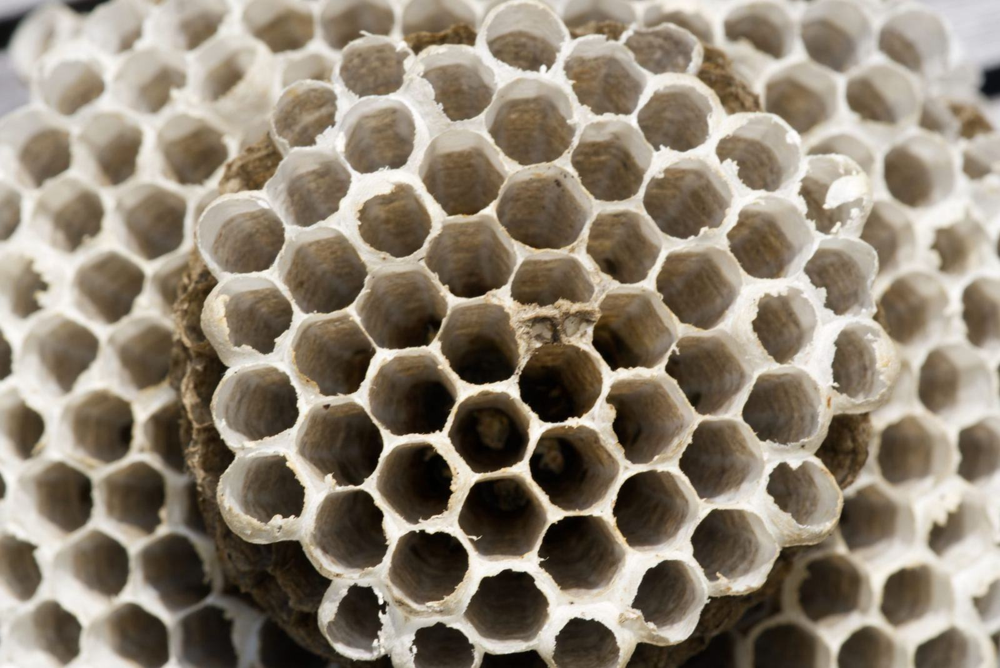
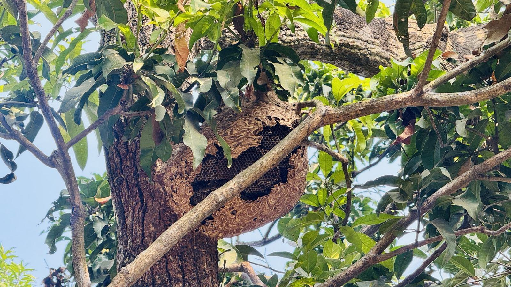
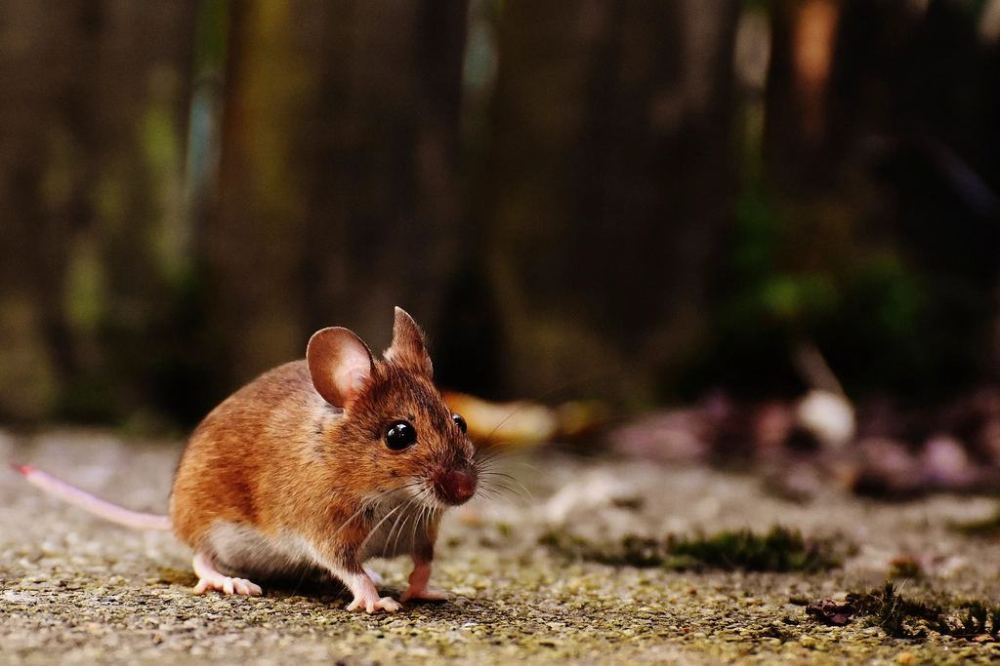
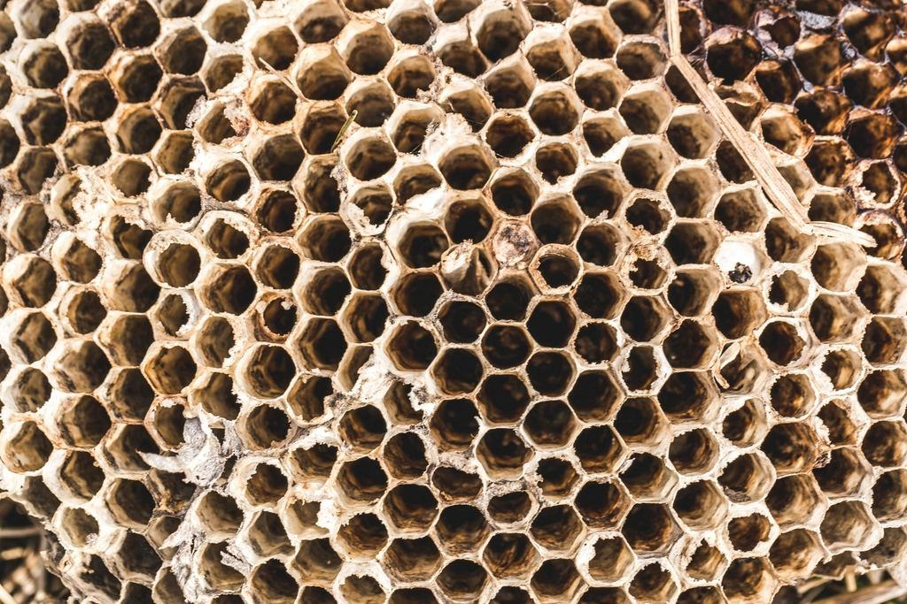

Fem tekniker, 98 000 km² och en snöskoter
Polarskydd är ett litet bolag med ett stort län. Vi tar hand om möss i fjällstugan, hästmyror i timmerhuset och vägglöss i arbetsboendet – och vi pratar svenska, finska och meänkieli.
Vad har du hittat i stugan?


I Stockholm kunde jag ta sju kunder om dagen. Här tar jag tre, men alla tre har väntat på någon som förstår hur ett timmerhus i Tornedalen fungerar.

Små men certifierade
 01
01Behörighet för alla fem
Alla fem tekniker har Kemikalieinspektionens behörighet för yrkesmässig bekämpning.

02Förarbevis snöskoter
Hela teamet har förarbevis för snöskoter och utbildning i vinterfärd och första hjälpen.
 03
03CEPA – trots storleken
Certifierade sedan 2023 – som ett av de minsta bolagen i landet med certifieringen.
 04
04Godkänd för arbetsboenden
Godkända leverantörer hos två av länets största boendeoperatörer för gruventreprenörer.
Ett län större än Portugal
Polarskydd startades 2018 av syskonen Sara och Jonas Niemi från Övertorneå. Sara hade arbetat som tekniker i Stockholm i sex år och flyttade hem när hon insåg att närmaste skadedjursföretag låg två timmar bort för de flesta i Tornedalen.
- 5tekniker01 / 04
För hela länet
- 600stugor02 / 04
Med vinteravtal
- 900km03 / 04
Per tekniker och vecka
- 3språk04 / 04
Svenska, finska, meänkieli

Det här frågar stugägarna
Hittar du inte svaret? Ring eller mejla oss.
01Kommer ni ut till min stuga trots att den ligger långt bort?
Ja. Vi tar samma pris i hela länet och samordnar besöken med andra stugor i samma område.
02Hur vet jag om det är hästmyror?
Fint sågspånsliknande spill under väggar och lister och stora svarta myror inomhus på våren. Ring oss innan du börjar riva.
03Kan ni komma när vägen inte är plogad?
Ja, med snöskoter från december till april om det finns spår eller led i närheten.
04Används gift i stugan?
Nej. I fritidshus använder vi bara mekaniska fällor i låsta lådor.
05Vad kostar ett vinteravtal?
2 950 kr för en stuga med bilväg och 3 950 kr för en stuga som kräver skoter.
06Pratar ni finska?
Ja, Sara och Jonas pratar svenska, finska och meänkieli, och Niila kan nordsamiska.
Så är vi organiserade
- 01KustlandetSara och ElinKustlandetKontoret i Luleå och de flesta fritidshusen i skärgården och längs älvdalarna.Läs mer

- 02TornedalenJonasTornedalenJonas kör Torneälvdalen och har de flesta hästmyreuppdragen i gamla gårdar och timmerhus.Läs mer

- 03MalmfältenAnders och NiilaMalmfältenArbetsboenden, fjällstugor och stugbyar. Har bilen och snöskotern stationerade i Kiruna.Läs mer



Var ligger stugan?
Skriv by eller närmaste ort och om det finns vinterväg. Vi ringer upp och föreslår en vecka när vi är i området.

ÖppettiderMån–fre 7–16, oktober även lör